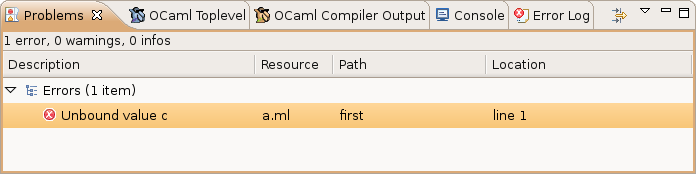
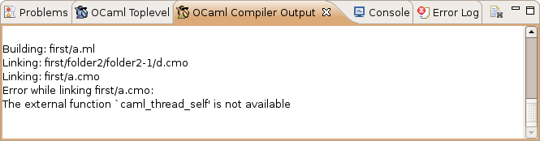

When you compile a project (see Compiling an OCaml project), the compiler can generate warnings or errors, which you can see in several ways:
Errors appear in the editor as squiggly lines under the erroneous expressions, and you can see the error message by hovering your mouse over the expression, or the red cross in the editor's margin.
You also see an overview of all errors and warnings from all the projects in your workspace, in the Problems view:

You can double-click on any line in this view to jump to the corresponding location in the editor.
Note: Don't mix the Problems view, which shows the problems in your projects, with the Error Log, which shows errors encountered by Eclipse itself.
Errors and warnings also appear as little icons overlayed over the main icons of the corresponding files in the navigator view:

You can also see all the messages coming from the tools used to build your project (ocamlc, make, etc.) in the OCaml Compiler Output view:

Tip: Sometimes, the OCaml plug-in might miss some errors or warnings in the Problems view, but you can always see them all in the OCaml Compiler Output view.